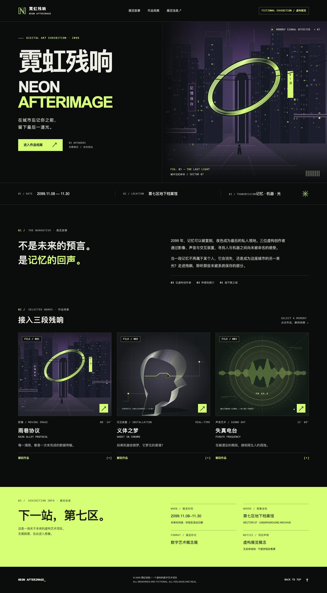

L007已完成 · 三种宽度通过

nextlevelbuilder/ui-ux-pro-max-skill
ui-ux-pro-max
采用唯一提供的 ui-ux-pro-max Skill：保留其网格秩序、清楚的信息层级、200–250ms 交互反馈与可访问性约束；参考结果中偏企业化的浅色 Swiss 配色不适合本简报，因此按用户要求转译为深色数字画廊、荧光黄绿与低饱和紫色的赛博朋克方案。首屏以中英双语海报字体与原创 SVG 城市峡谷构成主视觉，金属记忆光环呼应展览主题；后续依次为展览叙事、三件作品档案、醒目的展览信息与页脚。城市、金属头颅和电台频谱均由本地 SVG 几何生成，无网络字体、图片或库依赖。实现
此 Skill 的实际角色与限制
ui-ux-pro-max 是本次唯一使用的设计 Skill，负责视觉系统、布局、交互反馈、响应式与可访问性决策；实现采用可直接通过 file:// 打开的原生 HTML、CSS、JavaScript 与原创 SVG。
- 作品与创作者均为虚构；展览日期和地点不对应现实活动。
- 交互装置以作品详情介绍其概念，不模拟真实呼吸传感器；声音作品未附音频，详情中已明确说明。
- 使用系统字体而非远程字体，不同设备上的中英文字形会略有差异。
- 未进行浏览器实测；作品详情依赖支持原生 HTML dialog 的现代浏览器。
上方限制是生成当时的原始自报；控制器后续补充见实验记录与检查记录。